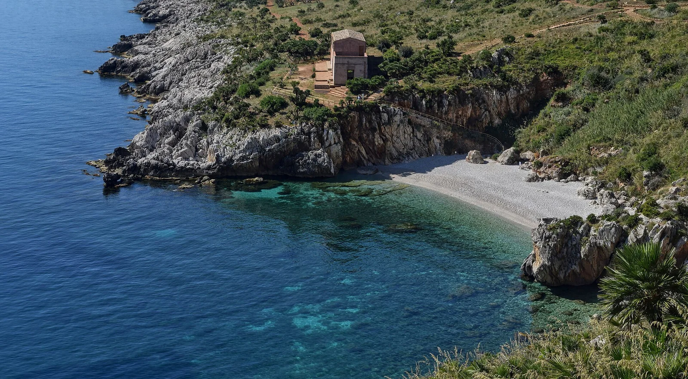

Riserva dello Zingaro
Trapani, Sicile, Italie · snorkeling, baignade

Première réserve naturelle de Sicile : sept kilomètres de côte sans route entre Scopello et San Vito Lo Capo. Des sentiers descendent vers des criques de galets à l’eau très claire, comme Cala dell’Uzzo.
- Lieu
- Trapani, Sicile, Italie
- Niveau
- Débutant
- Activités
- snorkeling, baignade
- Type d'eau
- Mer / océan
- Coordonnées
- 38.11, 12.79 (position approximative du secteur)
Dangers à connaître
- Sentiers exposés et sans ombre : chaleur forte en été.
- Criques de galets et rochers : chaussons conseillés.
Le conseil d'Ocean Buddy
Prends beaucoup d’eau et de bonnes chaussures : les criques ne s’atteignent qu’à pied et l’entrée de la réserve est payante.
Ouvrir dans Ocean Buddy Télécharger sur l'App Store
Source : Fiche Ocean Buddy · septembre 2026 · à vérifier localement.